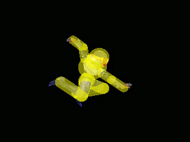

The list of characters in order by the character select screen. The table contains information as to why characters are or are not competitively viable. For characters that are viable there is a GIF that shows one of their best moves to give you an example.
| What makes Dr. Mario viable is their good projectile, high level out-of-shield tech, and a grab kill confirm on most of the cast. | ||
| Mario is not a viable character to get top 8 at tournaments because of his lack of range, medicore projectile, bad recovery, mediorce speed, and no guarenteeed kill confirms on most members of the cast. | ||
| Luigi is a viable character to get top 8 at major tournaments because of his large wavedash, grab confirms, fast aerials, and strong smash attacks that confirm out of grab. | ||
| Bowser is the worst character in the game. The combination of his slow jump-squat animation, poor aerials, slow speed, big hitbox, and bad recovery there are almost no redeeming qualities for Bowser to not be the worst in the game. | ||
| Peach is a top tier character because of her strong and fast aerials, a chaingrab on Fox, Falco, and Captain Falcon, safe pressure on shield, one of the best projectiles, and the ability to float offstage and edgeguard. | ||
| What makes Yoshi have the ability to get top 8 at a tournament is their strong combo game on fastfallers, strong aerials, parrying, vertical aerial speed, and their double jump armor. | ||
 |
Donkey Kong is not competitively viable because of a huge hitbox, slow groundspeed, many slow aerials, and bad recovery. | |
| Captain Falcon is tied with Fox as being the fastest character in the game. This and their fantastic aerials, grab combos, and having one of the strongest moves in the game as a combo finisher is why this character is a top tier. | ||
| Ganondorf is slow character with a long jump squat, long start up aerials, and mediocre range. However, he has strong moves that kill early and is very heavy, so he rarely dies at low percents. | ||
| Falco is one of the weakest top tiers in tournament performance. Falco has a strong projectile, two of the best moves in the game, and the fastest vertical speed. However, with a worse recovery and horizontal speed compared to Fox. | ||
| Fox has been thought of as the strongest character in the game for many years in Melee's meta. Fox has the best recovery, fastest ground speed, strong wavedash, one of the best moves in the game, fastest short-hop, fast and strong aerials, and has some strong best kill options. | ||
| Ness is a character that is not viable for tournament play because of the few strengths he has that are impactful. Some of his aerials are fast, others have long start up time and are weak, he has a horrible recovery, very little range, and he has no confirms that lead into kills. | ||
| Ice Climbers is the strangest and highest value character off of grab. With an infinite from grabbing an opponent that leads into a kill, they are able to compete against the other top tiers and have the ability to make top 8 at majors. | ||
 |
Kirby used to be considered the worst character in the game. This was because of his terrible recovery, grabs that do not function as intended, poor range, no guarenteed kill options, and are slow on the ground and in the air. | |
| Samus is the slowest character that is able to make top 8 at a super major. The reason is because of their strong tilts, wavedash, smash attacks, great camping game, good projectiles, and good combos on fast fallers. | ||
| Sheik is the stronger of the two, being one of the strongest top tiers against the bottom tier characters and having a good combo game against top tiers. Sheik has strong and safe aerials, good smash attacks, kill confirms, and good edgeguarding. |  | |
| Link is one of the better low tiers for competitve viability. His strengths are a good projectile, good projectile tech, a decent recovery with utilization of bombs and tether, up b out of sheild, and a good nair. | ||
| Young Link is one of the few low tiers that sees play for certain matchups. The reason is because of their great ability to camp with projectiles, they are fast, a good fair and nair, bomb confirms, and up b out of sheild. | ||
| The developers of Melee did not program Pichu to be a good character to use, so their aerials are small and do little damage, no kill confirms, smash attacks that do not work, and the character damages itself when using some moves. | ||
| Pikachu is a top tier because of their strong and fast aerials, good grab confirms, small hitbox, good recovery, kill confirms, strong kill moves, and the very strong edgeguarding. The weaknesses of Pikachu is their short range, light weight, and their approaches can be crouch cancelled. | ||
| Jigglypuff is one of the best characters in the game. The strengths of Jigglypuff is a great recovery, best aerial game of any character, very strong bair, kill confirms off grab, strong aerials, and strong edgeguarding. | ||
| Mewtwo is one of the worst characters in the game. However, he has a good matchup against Fox on Final Destination and has a strong downtilt. But, that does not overvalue his low weight, slow speed, and poor kill options against most of the cast. | ||
| Mr. Game & Watch is the character that the developers forgot to finish. The weaknesses of this character are aerials that cannot be L-cancelled, small sheild, linear recovery, and light weight. | ||
| Marth is considered the third best character because of his long range, great combo game on fast fallers, chain grabs on Fox and Falco, strong options against crouch cancel, fast aerials, good edgeguarding, and confirmed kill options. | ||
| Roy is a low tier because of how horribly he was programmed. His moves do not cause hit lag, so they are easily punished. The strong moves this character has is combos off downtilt, grab combos on some characters, and the strongest counter in the game. | ||